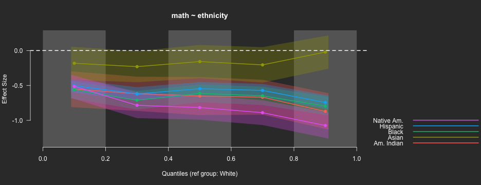
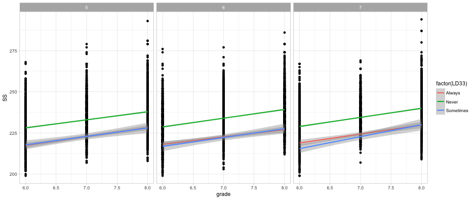
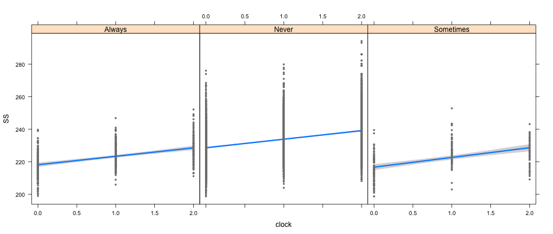
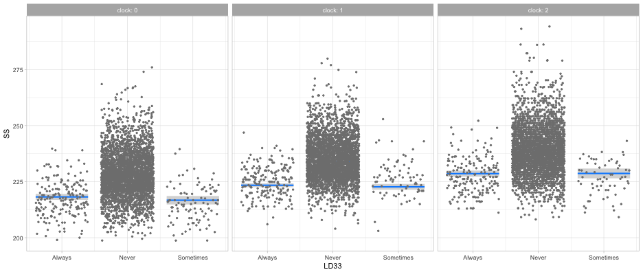

Agenda
- Introduce R
- Very basics of R (object assignment)
- R packages
- Running multiple regression models
- Visualizing multiple regression models
Who am I?
Daniel Anderson
- Research Associate: Behavioral Research and Teaching
- Dad (two daughters: 5 and 3)
- Quantitative educational researcher who loves R
- Primary areas of interest
- R and computational educational research
- Open data, open science, and reproducible workflows
- Growth modeling (primarily through multilevel models)
Part of why I love R
- Computer programming language = you can do ANYTHING!
- Develop websites: http://www.dandersondata.com
- Develop new algorithms/methods: https://github.com/DJAnderson07/esvis
- Create huge gains in efficiency: https://github.com/DJAnderson07/r2Winsteps
- Transparency and open and reproducible research
- The R community!
All of this great stuff and it just happens to also be free.
Free Books!
The book for the course I teach
The book for the next course I would like to teach (if there is one)
Other books
Freely available at http://socviz.co
What is R?
- A programming language
- Tremendously powerful and flexible statistical software that happens to be free
- No point-and-click interface
- Incredible array of external “packages” available for specialized analyses, data visualizations, or to automate much of the data “munging” process
Code-based interface
Moving to code/programming
Advantages
- Flexibility
- Only limited by your own creativity (and current level of programming skills, which are ever-evolving)
- Transparency
- Documented record of every step taken in your data preparation and analysis
- Efficiency
- Many (most?) tasks can be automated and/or applied to multiple datasets/variables simultaneously or essentially simultaneously
Disadvantages
- Steep learning curve
- Absolutely requires a significant time investment, both to learn initially and build fluency
- Equivalent to learning a new language
- You will lose patience with point-and-click interfaces
- Likely to become “one of the converted”
The R Learning Curve

How to learn R?
- Three most important ingredients: time, time, and more time
- A sprinkling of dedication and determination help.
- Be patient and forgiving with yourself. It will feel slow at first. Most people have not trained themselves to think in this way.

R as a big calculator
3 + 2
## [1] 5
(1/-(3/2)^2) / 2^-1/9
## [1] -0.09876543
Object Assignment
a <- 3
b <- 2
a + b
## [1] 5
a / (a + b)
## [1] 0.6
Object re-assignment
a <- 3
a
## [1] 3
a <- 7
a
## [1] 7
Object Assignment (continued)
Objects can be of a variety of types.
string <- "Hello world!"
logical <- TRUE
double <- 3.2587021
Integer <- 6L
In this case, we can’t exactly do arithmetic with all of these. For example
string + double
## Error in string + double: non-numeric argument to binary operator
But, these objects can be extremely useful in programming.
Functions and getting help
R functions
- Anything that carries out an operation in R is a function, even
+. - Functions (outside of primitive functions) are preceded by
()- e.g.,
sum(),lm()
- e.g.,
Getting help
?can be helpful, but often too advanced early on- Helpful for understanding the formal arguments of a function
- Scroll down to the examples first
- Google is your best friend
- Other good websites
- http://stackoverflow.com
- Mailing lists: - https://stat.ethz.ch/mailman/listinfo/r-help
R packages
R ships with considerable functionality. It also comes with a set of pre-loaded packages
- e.g.
- “base”
- “graphics”
- “stats”
R also comes with a set of packages installed, but not loaded on launch
- e.g.
- “boot”
- “MASS”
- “Matrix”
Pre-loaded packages operate “out of the box”. For example, plot is part of the graphics package, which ships with R.
plot(x = 1:10, y = 1:10)

On CRAN
- Any of these can be installed with
install.packages("pkg_name"). You will then have access to all the functionality of the package. - Notice this plot only goes to mid-2014. As of this writing (11/22/17), there are 11,892 packages available on CRAN! See https://cran.r-project.org/web/packages/
Other packages
On github
Installing from github
First, install the devtools package from CRAN
install.packages("devtools")
Next, load the devtools library to access the install_github function. For example, to install my esvis package
library(devtools)
install_github("DJAnderson07/esvis")
You then have access to all the functionality of that package once you load it. Let’s look at these data:
| sid | cohort | sped | ethnicity | frl | ell | season | reading | math |
|---|---|---|---|---|---|---|---|---|
| 332347 | 1 | Non-Sped | Native Am. | Non-FRL | Non-ELL | Winter | 208 | 205 |
| 400047 | 1 | Non-Sped | Native Am. | FRL | Non-ELL | Spring | 212 | 218 |
| 402107 | 1 | Non-Sped | White | Non-FRL | Non-ELL | Winter | 201 | 212 |
| 402547 | 1 | Non-Sped | White | Non-FRL | Non-ELL | Fall | 185 | 177 |
| 403047 | 1 | Sped | Hispanic | FRL | Active | Winter | 179 | 192 |
| 403307 | 1 | Sped | Hispanic | Non-FRL | Non-ELL | Winter | 189 | 188 |
PP-Plot
library(esvis)
pp_plot(reading ~ ell, benchmarks)

Binned quantile effect sizes
binned_plot(math ~ ethnicity, benchmarks,
qtiles = seq(0, 1, .2),
theme = "dark")

ES Calculation
hedg_g(math ~ ethnicity, benchmarks, ref_group = "White")
## ref_group foc_group estimate
## 1 White Asian -0.1811177
## 2 White Hispanic -0.6226720
## 3 White Black -0.6547893
## 4 White Am. Indian -0.6685548
## 5 White Native Am. -0.8248879
auc(math ~ ethnicity, benchmarks)
## ref_group foc_group estimate
## 1 White Asian 0.5623478
## 2 White Hispanic 0.6689338
## 3 White Black 0.6805925
## 4 White Am. Indian 0.6888028
## 5 White Native Am. 0.7352343
## 6 Asian Hispanic 0.6030755
## 7 Asian Black 0.6155365
## 8 Asian Am. Indian 0.6231116
## 9 Asian Native Am. 0.6681564
## 10 Hispanic Black 0.5135554
## 11 Hispanic Am. Indian 0.5195881
## 12 Hispanic Native Am. 0.5683233
## 13 Black Am. Indian 0.5071228
## 14 Black Native Am. 0.5542968
## 15 Am. Indian Native Am. 0.5462639
## 16 Native Am. Am. Indian 0.4516412
## 17 Native Am. Black 0.4455142
## 18 Native Am. Hispanic 0.4311700
## 19 Native Am. Asian 0.3304590
## 20 Native Am. White 0.2644428
## 21 Am. Indian Black 0.4915051
## 22 Am. Indian Hispanic 0.4787148
## 23 Am. Indian Asian 0.3743474
## 24 Am. Indian White 0.3091228
## 25 Black Hispanic 0.4863905
## 26 Black Asian 0.3842752
## 27 Black White 0.3194840
## 28 Hispanic Asian 0.3963723
## 29 Hispanic White 0.3311781
## 30 Asian White 0.4368362
Is this exciting!?! YES!!!
Why is this such a big deal?
- With just a basic knowledge of R you have access to literally thousands of packages
- Expanding on a daily basis
- Provides access to cutting edge and specialized functionality for analysis, data visualization, and data munging
- Some of the most modern thinking on data analysis topics are often represented in these packages
Fitting multiple regression models
Want to follow along?
- Copy and paste the following code in your R console
install.packages(c("tidyverse", "rio", "devtools", "arm", "lm.beta", "visreg", "lme4"))
Step 0
- Before fitting model, you’ll generally need to import some data, let’s do so now
- Make sure your data file is stored in the same place that your script is
- The
setclassargument above is actually not required, but makes it a bit easier to work with.
library(rio)
d <- import("synthetic_data.csv", setclass = "tbl_df")
d
## # A tibble: 11,218 x 6
## SID grade clock cohort LD33 SS
## <int> <int> <int> <int> <chr> <int>
## 1 1243667 7 1 5 Never 238
## 2 12961647 6 0 7 Never 221
## 3 5477581 7 1 5 Never 224
## 4 4177568 8 2 5 Never 248
## 5 9368752 7 1 6 Never 239
## 6 7736290 7 1 7 Never 239
## 7 9486143 6 0 5 Never 220
## 8 6181953 7 1 5 Never 237
## 9 7966652 7 1 7 Never 234
## 10 7776640 7 1 6 Never 234
## # ... with 11,208 more rows
Research Questions
- What is the average growth from Grades 6-8 in math (
SS) - Does the averge initial achievement or rate of growth depend upon
cohort? - Does the averge initial achievement or rate of growth depend upon
LD33, the students’ pattern of SLD classification?- I don’t remember why the variable has the name it does
NOTE: Multiple regression is NOT the best way to approach this. A multilevel model would be preferable. But, at the end, I’ll show you how simple it is to extend what we do here to the multilevel modeling approach.
Step 1: Look at your data!
Always best to visualize your data first. Let’s produce plots addressing each of our research questions.
- What does the average growth look like? (plot on next slide)
library(tidyverse)
theme_set(theme_light()) # Not neccessary, but I like it
ggplot(d, aes(x = grade, y = SS)) +
geom_point() +
geom_smooth(method = "lm")

Does initial achievement or average growth depend upon cohort?
ggplot(d, aes(grade, SS)) +
geom_point() +
geom_smooth(method = "lm",
aes(color = factor(cohort)))

Does initial achievement or average growth depend upon LD status?
ggplot(d, aes(grade, SS)) +
geom_point() +
geom_smooth(method = "lm",
aes(color = factor(LD33)))

What about both?
ggplot(d, aes(grade, SS)) +
geom_point() +
geom_smooth(method = "lm",
aes(color = factor(LD33))) +
facet_wrap(~cohort)

Quick aside
geom_jittermight be slightly better in this case
ggplot(d, aes(grade, SS)) +
geom_jitter(height = 0, width = 0.2, color = "gray80", alpha = 0.6) +
geom_smooth(method = "lm",
aes(color = factor(LD33))) +
facet_wrap(~cohort)

Step 2: Fit the model
- Use the
lmfunction- Part of base R
- Takes the following general form
mod <- lm(outcome ~ predictor1 + predictor2 + predictorN,
data = d)
Fit simple linear regression model first
library(arm)
time_mod <- lm(SS ~ clock, data = d)
display(time_mod, detail = TRUE)
## lm(formula = SS ~ clock, data = d)
## coef.est coef.se t value Pr(>|t|)
## (Intercept) 227.70 0.15 1485.71 0.00
## clock 5.31 0.12 44.85 0.00
## ---
## n = 11218, k = 2
## residual sd = 10.24, R-Squared = 0.15
Include a categorical predictor
- In R, categorical predictors need to be defined as factors
- Factors can have any underlying contrast matrix, but by default dummy-coding is used, with the reference level being the first level
Change cohort to be a factor
d$cohort <- as.factor(d$cohort)
Inspect the contrast matrix with
contrasts(d$cohort)
## 6 7
## 5 0 0
## 6 1 0
## 7 0 1
Change the reference level with
d$cohort <- relevel(d$cohort, ref = "7")
contrasts(d$cohort)
## 5 6
## 7 0 0
## 5 1 0
## 6 0 1
Fit a second model
cohort_mod <- lm(SS ~ clock + cohort, data = d)
display(cohort_mod, detail = TRUE)
## lm(formula = SS ~ clock + cohort, data = d)
## coef.est coef.se t value Pr(>|t|)
## (Intercept) 228.40 0.21 1104.77 0.00
## clock 5.31 0.12 44.87 0.00
## cohort5 -1.50 0.24 -6.33 0.00
## cohort6 -0.57 0.24 -2.43 0.02
## ---
## n = 11218, k = 4
## residual sd = 10.22, R-Squared = 0.16
Compare models
anova(time_mod, cohort_mod)
## Analysis of Variance Table
##
## Model 1: SS ~ clock
## Model 2: SS ~ clock + cohort
## Res.Df RSS Df Sum of Sq F Pr(>F)
## 1 11216 1175695
## 2 11214 1171426 2 4269.3 20.435 1.385e-09 ***
## ---
## Signif. codes: 0 '***' 0.001 '**' 0.01 '*' 0.05 '.' 0.1 ' ' 1
Add cohort as predictor of the slope
cohort_mod2 <- lm(SS ~ clock + cohort + clock:cohort, data = d)
display(cohort_mod2, detail = TRUE)
## lm(formula = SS ~ clock + cohort + clock:cohort, data = d)
## coef.est coef.se t value Pr(>|t|)
## (Intercept) 228.06 0.27 847.84 0.00
## clock 5.64 0.21 27.34 0.00
## cohort5 -0.79 0.38 -2.09 0.04
## cohort6 -0.27 0.38 -0.72 0.47
## clock:cohort5 -0.71 0.29 -2.44 0.01
## clock:cohort6 -0.30 0.29 -1.02 0.31
## ---
## n = 11218, k = 6
## residual sd = 10.22, R-Squared = 0.16
Quick note on syntax
The following two lines of code are equivalent
cohort_mod2 <- lm(SS ~ clock + cohort + clock:cohort, data = d)
cohort_mod2 <- lm(SS ~ clock*cohort, data = d)
Need standardized coefficients?
# install.packages("lm.beta")
library(lm.beta)
lm.beta(cohort_mod2)
##
## Call:
## lm(formula = SS ~ clock + cohort + clock:cohort, data = d)
##
## Standardized Coefficients::
## (Intercept) clock cohort5 cohort6 clock:cohort5
## 0.00000000 0.41424809 -0.03344220 -0.01152243 -0.04243530
## clock:cohort6
## -0.01779824
Let’s skip ahead and fit the full model
- We want clock, cohort, and ld status all entered in the model, as well as the interaction between clock and cohort, and clock and ld status
Try to write the code on your own
Model
full_mod <- lm(SS ~ clock + cohort + LD33 +
clock:cohort + clock:LD33,
data = d)
display(full_mod, detail = TRUE)
## lm(formula = SS ~ clock + cohort + LD33 + clock:cohort + clock:LD33,
## data = d)
## coef.est coef.se t value Pr(>|t|)
## (Intercept) 218.47 0.69 318.29 0.00
## clock 5.47 0.54 10.20 0.00
## cohort5 -0.79 0.36 -2.19 0.03
## cohort6 -0.27 0.36 -0.75 0.45
## LD33Never 10.44 0.67 15.64 0.00
## LD33Sometimes -1.48 1.14 -1.30 0.19
## clock:cohort5 -0.64 0.28 -2.30 0.02
## clock:cohort6 -0.28 0.28 -0.99 0.32
## clock:LD33Never 0.07 0.52 0.14 0.89
## clock:LD33Sometimes 0.78 0.94 0.84 0.40
## ---
## n = 11218, k = 10
## residual sd = 9.83, R-Squared = 0.22
Compare our last model to prior models
anova(cohort_mod2, full_mod)
## Analysis of Variance Table
##
## Model 1: SS ~ clock + cohort + clock:cohort
## Model 2: SS ~ clock + cohort + LD33 + clock:cohort + clock:LD33
## Res.Df RSS Df Sum of Sq F Pr(>F)
## 1 11212 1170801
## 2 11208 1084086 4 86714 224.13 < 2.2e-16 ***
## ---
## Signif. codes: 0 '***' 0.001 '**' 0.01 '*' 0.05 '.' 0.1 ' ' 1
Visualizing the fitted models
(I’m guessing I’m almost out of time, but quickly…) The visreg package is amazing, and I highly recommend it
library(visreg)
visreg(full_mod, "clock", by = "LD33")

visreg(full_mod, "clock", by = "cohort")

visreg(full_mod, "LD33", by = "clock", gg = TRUE)

Kinda hard but maybe helpful
visreg2d(full_mod, "clock", "LD33", plot.type = "persp")

See the following links for more info on the visreg package
Last note - fitting the right model!
- The model we’ve fit should be multilevel. So let’s do it!
#install.package("lme4")
library(lme4)
mlm <- lmer(SS ~ clock + cohort + LD33 +
clock:cohort + clock:LD33 +
(1 + clock|SID),
data = d)
display(mlm, detail = TRUE)
## lmer(formula = SS ~ clock + cohort + LD33 + clock:cohort + clock:LD33 +
## (1 + clock | SID), data = d)
## coef.est coef.se t value
## (Intercept) 218.45 0.68 319.73
## clock 5.44 0.54 10.12
## cohort5 -0.76 0.37 -2.08
## cohort6 -0.27 0.36 -0.75
## LD33Never 10.44 0.66 15.74
## LD33Sometimes -1.48 1.13 -1.31
## clock:cohort5 -0.61 0.28 -2.17
## clock:cohort6 -0.26 0.28 -0.92
## clock:LD33Never 0.10 0.52 0.20
## clock:LD33Sometimes 0.76 0.94 0.81
##
## Error terms:
## Groups Name Std.Dev. Corr
## SID (Intercept) 2.08
## clock 1.45 -0.35
## Residual 9.54
## ---
## number of obs: 11218, groups: SID, 3580
## AIC = 83111.4, DIC = 83070.7
## deviance = 83077.0
How much variability?
library(lattice)
qqmath(ranef(mlm, condVar = TRUE))
## $SID

Parting thoughts
Today’s lecture is mostly about exposure. R takes a lot of time and effort to learn, but it is really worth it.
Questions?
Thanks!